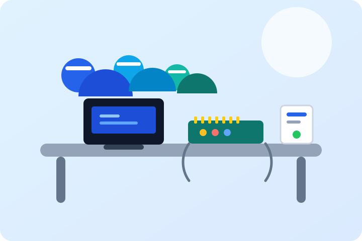
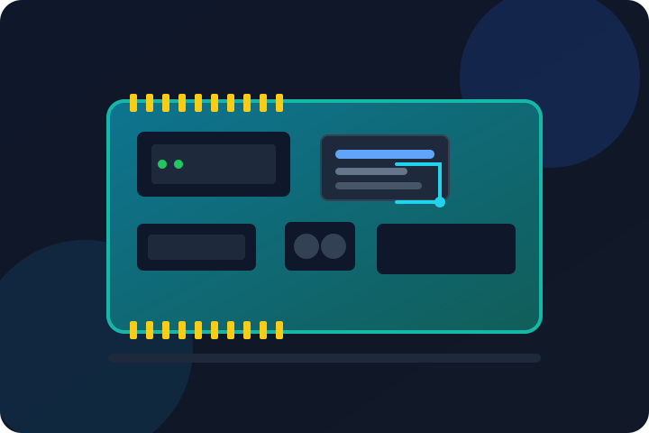

Visi
Menjadi laboratorium IoT yang aktif, inklusif, dan relevan sebagai penghubung antara pembelajaran, riset, dan kebutuhan masyarakat.
Tentang
ILMS mengelola ruang, perangkat, dan kegiatan agar proses belajar IoT berjalan lebih terarah dan terdokumentasi.

Pengantar
Laboratorium IoT adalah ruang belajar berbasis praktik. Mahasiswa tidak hanya mempelajari teori, tetapi juga merakit, menguji, dan mengevaluasi solusi nyata menggunakan sensor, aktuator, serta mikrokontroler.
Melalui ILMS, seluruh kebutuhan laboratorium diorganisasi dalam satu alur: pencatatan perangkat, penggunaan ruang, pendampingan, sampai publikasi hasil kegiatan.
Arah
Dua hal yang menjadi kompas dalam setiap kegiatan laboratorium.
Menjadi laboratorium IoT yang aktif, inklusif, dan relevan sebagai penghubung antara pembelajaran, riset, dan kebutuhan masyarakat.
Menyediakan sarana praktikum yang tertata, pendampingan yang terbuka, serta ruang kolaborasi untuk mengembangkan prototipe berbasis IoT.
Rasa ingin tahu, ketelitian, keselamatan kerja, berbagi pengetahuan, dan tanggung jawab terhadap perangkat bersama.
Fasilitas
Fasilitas utama yang tersedia untuk mendukung praktikum dan pengembangan prototipe.
Area kerja dengan sumber listrik, pencahayaan, dan ruang cukup untuk perakitan perangkat.
Board Arduino, ESP32, Raspberry Pi, serta modul pendukung untuk eksperimen dan prototipe.
Beragam sensor lingkungan, gerak, jarak, serta aktuator untuk kebutuhan kendali otomatis.
Area untuk presentasi, mentoring, dan berbagi hasil proyek antaranggota laboratorium.
Struktur
Peran yang memastikan kegiatan berjalan aman, tertib, dan produktif.
Mengarahkan kebijakan, prioritas kegiatan, dan pengembangan fasilitas.
Mengatur jadwal, modul, dan kebutuhan teknis kegiatan pembelajaran.
Mendampingi praktikan, memeriksa perangkat, dan menjaga prosedur keselamatan.
Terlibat dalam praktikum, riset, dokumentasi, dan kegiatan kolaborasi.
Perjalanan
Laboratorium berkembang melalui kegiatan yang dilakukan bersama. Setiap tahap menambah pengalaman, perangkat, dan cara kerja yang lebih baik.

Lihat inventori terlebih dahulu atau hubungi pengelola laboratorium.